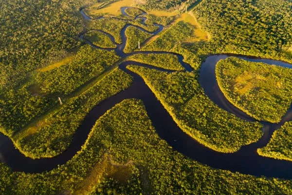

Amazônia
A Amazônia é o maior bioma do Brasil e do mundo, abrangendo cerca de aproximadamente 60% do território nacional e se estendendo por outros oito países sul-americanos. É conhecida por sua densa floresta tropical úmida, caracterizada por uma vegetação fértil, clima quente e úmido, com chuvas abundantes ao longo do ano. A região abriga a maior biodiversidade do planeta, com uma impressionante variedade de espécies de flora e fauna, muitas das quais ainda desconhecidas pela ciência. Entre os animais emblemáticos da Amazônia estão o jaguar, a arara, o boto-cor-de-rosa, além de uma infinidade de insetos, répteis e anfíbios. O rio Amazonas, que corta o bioma, é o maior em volume de água do mundo, desempenhando um papel crucial no ciclo hidrológico global e sendo responsável por um quinto da água doce que deságua nos oceanos. A floresta amazônica também é fundamental para a regulação climática, atuando como um grande sumidouro de carbono, ajudando a controlar o aquecimento global. Apesar de sua importância, a Amazônia enfrenta sérios desafios ambientais, como o desmatamento, a garimpo ilegal e a expansão da agricultura e pecuária, que ameaçam sua biodiversidade e os modos de vida das populações indígenas e tradicionais que ali vivem. A conservação da Amazônia é um tema crucial, não apenas para o Brasil, mas para o equilíbrio ambiental do planeta, envolvendo questões de sustentabilidade, economia e preservação cultural.